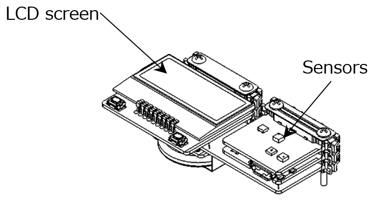
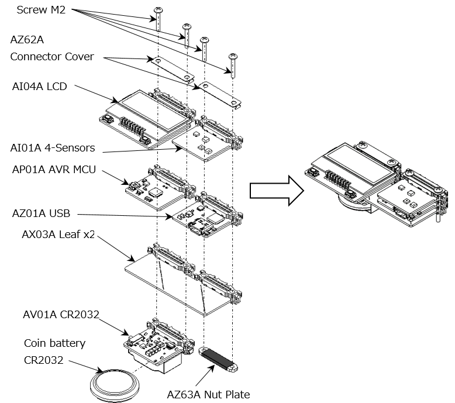

LCD
概要
電源リーフには、電池電圧をモニタするためのADコンバータを実装。温度、湿度、照度、傾きだけでなく、電池電圧も測定し、LCDに表示させます。 温度（または、湿度）の補正の仕方 表示させたい温度（または、湿度）と４-Sensorsの温度（または、湿度）に、ずれがあるときは、２点間補正を行います。詳しくは、こちら。

必要なハードウェアの準備
| Type | Name | Q’ty |
|---|---|---|
| AI04A | LCD | 1 |
| AI01A | 4-Sensors | 1 |
| AP01A | AVR MCU | 1 |
| AZ01A | USB | 1 |
| AX03A | Leaf×2 | 1 |
| AV01A | CR2032 | 1 |
| AZ62A | Connector Cover | 2 |
| AZ63A | Nut Plate | 1 |
| CR2032 3V Lithium coin cell battery | 1 | |
| Screw M2×25mm | 4 |
リーフの組立

スケッチの書き込み
- 書き込みには、4-Sensors、LCD、AVR MCUライブラリ（タイマ割り込み）が必要です。予め、ライブラリをインクルードしておいてください。詳しくは、[こちら]。
- Arduino IDEで、以下のスケッチをマイコンボードに書き込んでください。 //===================================================================== // Leafony Platform sample sketch // Platform : 4-Sensors // Processor : ATmega328P (3.3V /8MHz) // Application : 4-Sensors with LCD // // Leaf configuration // (1) AI01 4-Sensors // (2) AI04 LCD // (3) AP01 AVR MCU // (4) AV02 CR2450 or AV01 CR2032 // (5) AZ01 USB (for debug) // // (c) 2019 Trillion-Node Study Group // Released under the MIT license // https://opensource.org/licenses/MIT // // Rev.00 2019/08/20 First release //===================================================================== //use libraries //Adafruit LIS3DH //https://github.com/adafruit/Adafruit_LIS3DH //※ Adafruit_LIS3DH.h // uint8_t readRegister8(uint8_t reg); // void writeRegister8(uint8_t reg, uint8_t value); // をpublic:に移動する //Adafruit Unified Sensor Driver //https://github.com/adafruit/Adafruit_Sensor //SmartEverything ST HTS221 Humidity Sensor //https://github.com/ameltech/sme-hts221-library //ClosedCube Arduino Library for ClosedCube OPT3001 //https://github.com/closedcube/ClosedCube_OPT3001_Arduino //ST7032 - Arduino LiquidCrystal compatible library //https://github.com/tomozh/arduino_ST7032 //=====================================================================
//===================================================================== // difinition //===================================================================== #include <MsTimer2.h> #include <avr/wdt.h> #include <avr/sleep.h> #include <avr/power.h>
#include <Wire.h>
#include <Adafruit_LIS3DH.h>
#include <Adafruit_Sensor.h>
#include <HTS221.h>
#include <ClosedCube_OPT3001.h>
#include <SoftwareSerial.h>
#include <ST7032.h>
//=====================================================================
//===================================================================== // シリアルコンソールへのデバック出力 // #define DEBUG = 出力あり // //#define DEBUG = 出力なし（コメントアウトする） //===================================================================== #define DEBUG //=====================================================================
//=====================================================================
// IOピンの名前定義
// 接続するリーフに合わせて定義する
//=====================================================================
// ——————————————–
// PD port
// digital 0: PD0 = PCRX (HW UART)
// digital 1: PD1 = PCTX (HW UART)
// digital 2: PD2 = INT0#
// digital 3: PD3 = INT1#
// digital 4: PD4 = Reserved /* not use */
// digital 5: PD5 = Reserved /* not use */
// digital 6: PD6 = Reserved /* not use */
// digital 7: PD7 = Reserved /* not use */
// ——————————————–
#define PCTX 0
#define PCRX 1
#define INT0 2
#define INT1 3
#define RSV_D4 4
#define RSV_D5 5
#define RSV_D6 6
#define RSV_D7 7
// ——————————————– // PB port // digital 8: PB0 = Reserved /* not use */ // digital 9: PB1 = Reserved /* not use */ // digital 10:PB2 = SS# // digital 11:PB3 = MOSI // digital 12:PB4 = MISO // digital 13:PB5 = SCK (LED) // PB6 = XTAL1 // PB7 = XTAL2 //——————————————— #define RSV_D8 8 #define RSV_D9 9 #define SS 10 #define MOSI 11 #define MISO 12 #define LED_PIN 13
// ——————————————– // PC port // digital 14/ Analog0: PC0 = Reserved /* not use */ // digital 15/ Analog1: PC1 = Reserved /* not use */ // digital 16/ Analog2: PC2 = Reserved /* not use */ // digital 17/ Analog3: PC3 = Reserved /* not use */ // digital 18/ SDA : PC4 = SDA (I2C) // digital 19/ SCL : PC5 = SCL (I2C) // RESET : PC6 = RESET# //———————————————– #define RSV_D14 14 #define RSV_D15 15 #define RSV_D16 16 #define RSV_D17 17 #define SDA 18 #define SCL 19
//===================================================================== // プログラム内で使用する定数定義 // //===================================================================== //———————————————– //３軸センサ、輝度センサ I2Cアドレス //———————————————– #define LIS2DH_ADDRESS 0x19 // SD0/SA0 pin = VCC #define OPT3001_ADDRESS 0x45 // ADDR pin = VCC #define I2C_EXPANDER_ADDR_LCD 0x1A
//———————————————– // loop() interval // MsTimer2のタイマー割り込み発生間隔(ms) //———————————————– #define LOOP_INTERVAL 125 // 125ms interval
//———————————————– // LIS2DH //———————————————– #define DIVIDER_2G 16383 // full scale 2G (=0xFFFF/4) #define DIVIDER_4G 8191 // full scale 4G (=0xFFFF/4/2) #define DIVIDER_8G 4096 // full scale 8G (=0xFFFF/4/4) #define DIVIDER_16G 1365 // full scale 16G (=0xFFFF/4/12)
//———————————————– // Batt ADC ADC081C027 //———————————————– #define BATT_ADC_ADDR 0x50
//===================================================================== // object //===================================================================== //———————————————– // Sensor //———————————————– Adafruit_LIS3DH accel = Adafruit_LIS3DH(); ClosedCube_OPT3001 light;
//———————————————– // LCD //———————————————– ST7032 lcd;
//===================================================================== // プログラムで使用する変数定義 // //===================================================================== //===================================================================== // RAM data //===================================================================== //————————— // loop counter //————————— uint8_t iLoop1s = 0;
//————————— // event //————————— bool eventSensorRead = false; bool eventWriteLCD = false;
//————————— // int0 interrupt //————————— volatile bool bEventSleep = false;
//————————— // interval Timer2 interrupt //————————— volatile bool bInterval = false;
//————————— // LIS2DH : accelerometer //————————— int16_t dataX, dataY, dataZ; float dataX_g, dataY_g, dataZ_g; float dataTilt, avrTilt;
//————————— // HTS221 : Temperature/Humidity //————————— float dataTemp, avrTemp; float dataHumid, avrHumid; float calcTemp = 0; float calcHumid = 0;
//————————— // 2点補正用データ //————————— // 温度補正用データ0 float TL0 = 25.0; // 4-Sensors温度測定値 float TM0 = 25.0; // 温度計等測定値 // 温度補正用データ1 float TL1 = 40.0; // 4-Sensors温度測定値 float TM1 = 40.0; // 温度計等測定値
// 湿度補正用データ0 float HL0 = 60.0; // 4-Sensors湿度測定値 float HM0 = 60.0; // 湿度計等測定値 // 湿度補正用データ1 float HL1 = 80.0; // 4-Sensors湿度測定値 float HM1 = 80.0; // 湿度計等測定値
//————————— // OPT3001 : Light //————————— float dataLight, avrLight; float calcLight = 0;
//————————— // LCD //————————— volatile bool bLCDchange = false; volatile int lcd_view_sts = 0;
//————————— // Sleep, Watchdog Timer //—————————
volatile int countWDT = 0; volatile int wakeupWDT = 2;
//————————— // Batt //————————— float dataBatt = 0;
//===================================================================== // setup //===================================================================== //———————————————– // port //———————————————– //===================================================================== // IOピンの入出力設定 // 接続するリーフに合わせて設定する //===================================================================== void setupPort(){
//——————— // PD port //——————— // PD0 : digital 0 = RX // PD1 : digital 1 = TX
pinMode(INT0, INPUT); // PD2 : digital 2 = BLE interrupt pinMode(INT1, INPUT); // PD3 : digital 3 = sensor interrupt
//——————— // PB port //——————— pinMode(LED_PIN, OUTPUT); // PB5 : digital 13 = DEV _LED digitalWrite(LED_PIN, LOW); //——————— // PC port //——————— // PC4 : digital 18 = I2C SDA // PC5 : digital 19 = I2C SCL } //===================================================================== // 割り込み処理初期設定 // //===================================================================== //———————————————– // external interrupt // 外部割り込み設定 //———————————————– void setupExtInt(){
attachInterrupt(0, intExtInt0, FALLING); // Sw1 INT0# = enabled detachInterrupt(1); // sensor INT1# = disabled }
//———————————————– // timer2 interrupt (interval=125ms, int=overflow) // メインループのタイマー割り込み設定 //———————————————– void setupTC2Int(){
MsTimer2::set(LOOP_INTERVAL, intTimer2); } //===================================================================== // I2C 制御関数 // //===================================================================== //———————————————– //I2C スレーブデバイスに1バイト書き込む //———————————————– void i2c_write_byte(int device_address, int reg_address, int write_data){ Wire.beginTransmission(device_address); Wire.write(reg_address); Wire.write(write_data); Wire.endTransmission(); } //———————————————– //I2C スレーブデバイスから1バイト読み込む //———————————————– unsigned char i2c_read_byte(int device_address, int reg_address){
int read_data = 0;
Wire.beginTransmission(device_address); Wire.write(reg_address); Wire.endTransmission(false);
Wire.requestFrom(device_address, 1); read_data = Wire.read();
return read_data; }
//===================================================================== // 各デバイスの初期設定 // //===================================================================== //———————————————– // sensor //———————————————– void setupSensor(){
//————————————- // LIS2DH (accelerometer) //————————————- //——————- // I2C address //—————— accel.begin(LIS2DH_ADDRESS);
//——————- // register //——————- accel.writeRegister8(LIS3DH_REG_CTRL1, 0x07); //X,Y,Z axis = enable accel.setDataRate(LIS3DH_DATARATE_1_HZ); //Data rate = 1Hz
accel.writeRegister8(LIS3DH_REG_CTRL2, 0x00); accel.writeRegister8(LIS3DH_REG_CTRL3, 0x00); // INT Disable accel.writeRegister8(LIS3DH_REG_CTRL4, 0x80); //BUD = enable, Scale = +/-2g
//————————————- // HTS221 (temperature /humidity) //————————————- smeHumidity.begin();
//————————————- // OPT3001 (light) //————————————- OPT3001_Config newConfig; OPT3001_ErrorCode errorConfig;
//——————- // I2C address //——————- light.begin(OPT3001_ADDRESS);
//——————- // config register //——————- newConfig.RangeNumber = B1100; // automatic full scale newConfig.ConvertionTime = B1; // convertion time = 800ms newConfig.ModeOfConversionOperation = B11; // continous conversion newConfig.Latch = B0; // hysteresis-style
errorConfig = light.writeConfig(newConfig);
if(errorConfig != NO_ERROR){ errorConfig = light.writeConfig(newConfig); //retry } }
//===================================================================== // 割り込み処理 // //===================================================================== //===================================================================== // interrupt //===================================================================== //———————————————- // Timer2 INT // タイマー割り込み関数 //———————————————- void intTimer2(){
bInterval = 1; }
//——————————————— // Watchdog Timer INT // WDT割り込み関数 //——————————————— ISR(WDT_vect){
wdt_disable();
countWDT += 1;
if (countWDT >= wakeupWDT){ countWDT = 0;
} }
//———————————————- // INT0 // INT0割り込み関数 //———————————————- void intExtInt0(){ if (bEventSleep == false) { bEventSleep = true; } else { bEventSleep = false; } }
//———————————————- // INT1 // INT1割り込み関数 //———————————————- void intExtInt1(){ //bWakeupINT1 = true; }
//==================================================================== // functions //==================================================================== //——————————————————————– // counter /event //——————————————————————– //—————————————– // main loop // メインループのループ回数をカウントし // 1秒間隔でセンサーデータの取得をONにする // 4秒間隔でスリープ確認をONにする //—————————————– void loopCounter(){
iLoop1s += 1;
//——————– // 1s period //——————– if (iLoop1s >= 8){ // 125ms x 8 = 1s
iLoop1s = 0;
eventSensorRead = true;
eventWriteLCD = true;
} }
//——————————————————————– // sensor //——————————————————————– //—————————————– // main loop // センサーデータ取得がONのとき、各センサーからデータを取得 // コンソール出力がONのときシリアルに測定値と計算結果を出力する //—————————————– void loopSensor(){ double temp_mv; //————————— // 1s period //————————— if (eventSensorRead == true){
//-------------------------
// initialize parameter
//-------------------------
eventSensorRead = false;
//-------------------------
// LIS2DH
// 3軸センサーのデータ取得
//-------------------------
accel.read();
dataX_g = accel.x_g; //X軸
dataY_g = accel.y_g; //Y軸
dataZ_g = accel.z_g; //Z軸
if(dataZ_g >= 1.0){
dataZ_g = 1.00;
} else if (dataZ_g <= -1.0){
dataZ_g = -1.00;
}
dataTilt = acos(dataZ_g)/PI*180;
//-------------------------
// HTS221
// 温湿度センサーデータ取得
//-------------------------
dataTemp = (float)smeHumidity.readTemperature(); //温度
dataHumid = (float)smeHumidity.readHumidity(); //湿度
//-------------------------
// 温度と湿度の2点補正
//-------------------------
dataTemp=TM0+(TM1-TM0)*(dataTemp-TL0)/(TL1-TL0); // 温度補正
dataHumid=HM0+(HM1-HM0)*(dataHumid-HL0)/(HL1-HL0); // 湿度補正
//-------------------------
// OPT3001
// 照度センサーデータ取得
//-------------------------
OPT3001 result = light.readResult();
if(result.error == NO_ERROR){
dataLight = result.lux;
}
//————————- // ADC081C027（ADC) // 電池リーフ電池電圧取得 //————————- uint8_t adcVal1 = 0; uint8_t adcVal2 = 0;
Wire.beginTransmission(BATT_ADC_ADDR); Wire.write(0x00); Wire.endTransmission(false); Wire.requestFrom(BATT_ADC_ADDR,2); adcVal1 = Wire.read(); adcVal2 = Wire.read();
if (adcVal1 == 0xff && adcVal2 == 0xff) { //測定値がFFならバッテリリーフはつながっていない adcVal1 = adcVal2 = 0; }
//電圧計算 ADC * （(リファレンス電圧(3.3V)/ ADCの分解能(256)) * 分圧比（２倍）） //dataBatt = (((adcVal1 « 4) | (adcVal2 » 4)) * (3.3 / 256)) * 2 ; temp_mv = ((double)((adcVal1 « 4) | (adcVal2 » 4)) * 3300 * 2) / 256; dataBatt = (float)(temp_mv / 1000);
//-------------------------
// シリアルモニタ表示
//-------------------------
#ifdef DEBUG
Serial.println("");
#if 0
Serial.println("— sensor data —");
Serial.println(” Tmp[degC] = " + String(dataTemp));
Serial.println(” Hum[%] = " + String(dataHumid));
Serial.println(” Lum[lx] = " + String(dataLight));
Serial.println(” Ang[arc deg] = " + String(dataTilt));
Serial.println(” Bat[V] = " + String(dataBatt));
//Serial.println("");
//Serial.println(” Accel X,Y,Z” + String(dataX_g) + " " + String(dataY_g) + " " + String(dataZ_g));
#else
Serial.println(“T =” + String(dataTemp) + " H =” + String(dataHumid) + " L=” + String(dataLight) + " A=” + String(dataTilt) + " V=” + String(dataBatt));
#endif
#endif
//bWakeupINT1 = false;
}
} //debug /// void getBattVal() { uint8_t adcVal1 = 0; uint8_t adcVal2 = 0;
Wire.beginTransmission(BATT_ADC_ADDR); Wire.write(0x00); Wire.endTransmission(false); Wire.requestFrom(BATT_ADC_ADDR,2); adcVal1 = Wire.read(); adcVal2 = Wire.read();
if (adcVal1 == 0xff && adcVal2 == 0xff) { //測定値がFFならバッテリリーフはつながっていない adcVal1 = adcVal2 = 0; }
//電圧計算 ADC * （(リファレンス電圧(3.3V)/ ADCの分解能(256)) * 分圧比（２倍））
//dataBatt = (((adcVal1 « 4) | (adcVal2 » 4)) * (3.3 / 256)) * 2 ;
double temp_mv = ((double)((adcVal1 « 4) | (adcVal2 » 4)) * 3300 * 2) / 256;
float batval = (float)(temp_mv / 1000);
Serial.println(” V=” + String(batval));
}
void loopLCD( void ){
/* */
if( eventWriteLCD == true ){
eventWriteLCD = false;
veiwSencerData();
}
}
//————————————— // Veiw sensor data // センサーデータを文字列に変換してLCDに表示する //————————————— void veiwSencerData(){
float value; char temp[7], humid[7], light[7], tilt[7],battVolt[7]; char code[4]; char sendData[40];
//———————————– //センサーデータを文字列に変換 //dtostrf(変換する数字,変換される文字数,小数点以下の桁数,変換した文字の格納先); //変換される文字数を-にすると変換される文字は左詰め、+なら右詰めとなる //———————————–
//————————- // Temperature (4Byte) //————————- value = dataTemp;
if(value >= 100){
value = 99.9;
}
else if(value <= -10){
value = -9.9;
}
dtostrf(value,4,1,temp);
//————————-
// Humidity (4Byte)
//————————-
value = dataHumid;
dtostrf(value,4,1,humid);
//————————- // Ambient Light (5Byte) //————————- value = dataLight;
if(value >= 100000){
value = 99999;
}
dtostrf(value,5,0,light);
//————————- // Tilt (4Byte) //————————- value = dataTilt;
if(value < 3){ value = 0; } dtostrf(value,4,0,tilt);
//————————- // Battery Voltage (4Byte) //————————- value = dataBatt;
if (value >= 10){ value = 9.99; } dtostrf(value, 4, 2, battVolt);
trim(temp); trim(humid); trim(light); trim(tilt); trim(battVolt);
lcd.clear();
switch (lcd_view_sts)
{
case 0:
// Tmp XX.X [degC]
lcd.print(“Temp”);
lcd.setCursor(0, 1);
lcd.print( String(temp) +” C”);
break;
case 1:
// Hum xx.x [%]
lcd.print(“Humidity”);
lcd.setCursor(0, 1);
lcd.print( String(humid) +” %");
break;
case 2:
// Lum XXXXX [lx]
lcd.print(“Luminous”);
lcd.setCursor(0, 1);
lcd.print( String(light) +” lx”);
break;
case 3:
// Ang XXXX [arc deg]
lcd.print(“Angle”);
lcd.setCursor(0, 1);
lcd.print( String(tilt) +” deg”);
break;
case 4:
// Bat X.XX [V]
lcd.print(“Battery”);
lcd.setCursor(0, 1);
lcd.print( String(battVolt) +” V”);
break;
default:
break;
}
if (lcd_view_sts < 4){
lcd_view_sts++;
}
else{
lcd_view_sts = 0;
}
//debug// #ifdef DEBUG //getBattVal(); #endif //debug// } //————————————— // trim // 文字列配列からSPを削除する //————————————— void trim(char * data) { int i = 0, j = 0;
while ((data + i) != ‘\0’){ if ((data + i) != ' ‘){ *(data + j) = *(data + i); j++; } i++; } *(data + j) = ‘\0’; }
//——————————————————————– // sleep //——————————————————————– //—————————————– // main loop // スリープ移行要求があった場合、センサーリーフをSLEEPさせて // WDTをセットしマイコンリーフをスリープさせる //—————————————– void loopSleep(){
if (bEventSleep == true){ //bEventSleep = false;
#ifdef DEBUG Serial.print(” »> Go to sleep : “); Serial.flush(); #endif //———————– // sleep //———————– sleepLCD(); sleepSensor(); //wdt_start(); sleep(); //———————– // wakeup //———————– wakeupSensor(); wakeupLCD();
#ifdef DEBUG
Serial.println(” «< Wake up «<”);
#endif
}
}
//—————————————–
// SLEEP
//—————————————–
void sleep(){
ADCSRA &= ~(1 « ADEN); //ADC停止
set_sleep_mode(SLEEP_MODE_PWR_DOWN); //SET SLEEP MODE
sleep_enable(); // SLEEP ENABLE
// BOD停止 MCUCR |= (1 « BODSE) | (1 « BODS); // MCUCRのBODSとBODSEに1をセット MCUCR = (MCUCR & ~(1 « BODSE)) | (1 « BODS); // すぐに（4クロック以内）BODSSEを0, BODSを1に設定 asm(“sleep”); // 3クロック以内にスリープ sleep_disable(); // SLEEP DISABLE } //—————————————– // WDT //—————————————– void wdt_start(){ // watchdog timer reset wdt_reset();
//disable interruput cli(); //clear WatchDog system Reset Flag(WDRF) MCUSR &= ~(1 « WDRF); // WDT変更許可 // WDCEとWDE同時セットで変更許可 WDTCSR |= 1 « WDCE | 1 « WDE; //WDT設定 // WDE=0,WDIE=1 :WDT overflowで割り込み // WDP3=1,WDP2=0,WDP1=0,WDP0=1: 8s WDTCSR = 1 « WDIE | 0 « WDE | 1 « WDP3 | 0 « WDP2 | 0 « WDP1 | 1 « WDP0; //enable interruput sei(); } //—————————————– // sleep sensor // センサーリーフをスリープさせる //—————————————– void sleepSensor(){
//———————– // OPT3001 sleep //———————– OPT3001_Config newConfig; OPT3001_ErrorCode errorConfig;
newConfig.ModeOfConversionOperation = B00; errorConfig = light.writeConfig(newConfig); if(errorConfig != NO_ERROR){
errorConfig = light.writeConfig(newConfig);
}
//———————– // LIS2DH sleep //———————– accel.setDataRate(LIS3DH_DATARATE_POWERDOWN);
//———————– // HTS221 sleep //———————– smeHumidity.deactivate(); }
//—————————————– // wakeup sensor // センサーリーフをスリープから復帰させる //—————————————– void wakeupSensor(){ //———————– // OPT3001 wakeup //———————– OPT3001_Config newConfig; OPT3001_ErrorCode errorConfig;
newConfig.RangeNumber = B1100; //automatic full scale newConfig.ConvertionTime = B1; //convertion time = 800ms newConfig.ModeOfConversionOperation = B11; //continous conversion newConfig.Latch = B1; //latch window style
errorConfig = light.writeConfig(newConfig); if(errorConfig != NO_ERROR){
errorConfig = light.writeConfig(newConfig); //retry
}
//———————– // LIS2DH wakeup //———————– accel.setDataRate(LIS3DH_DATARATE_1_HZ);
//———————– // HTS221 wakeup //———————– smeHumidity.activate(); } //—————————————– // sleep LCD // LCDリーフをスリープさせる //—————————————– void sleepLCD() { lcd.noDisplay(); } //—————————————– // sleep LCD // LCDリーフをスリープさせる //—————————————– void wakeupLCD(){ lcd.display(); } //—————————————– // poweroff LCD // LCDの電源OFF //—————————————– void powerOffLCD(){
// LCD 電源 OFF
i2c_write_byte(I2C_EXPANDER_ADDR_LCD, 0x01, 0x00);
}
//—————————————–
// wakeup LCD
// LCDリーフをスリープさせる
//—————————————–
void powerOnLCD(){
// LCD 電源 ＯＮ
i2c_write_byte(I2C_EXPANDER_ADDR_LCD, 0x01, 0x01);
// LCDの電源が一度落ちたので、ＬＣＤを再設定
lcd.begin(8, 2);
lcd.setContrast(30);
lcd.clear();
}
//==================================================================== // setup //==================================================================== void setup() {
//WDT disable wdt_disable();
delay(10);
Serial.begin(115200); // UART 9600bps Wire.begin(); // I2C 100KHz
i2c_write_byte(I2C_EXPANDER_ADDR_LCD, 0x03, 0xFE); powerOnLCD();
#ifdef DEBUG Serial.println(“=========================================”); Serial.println(“setup start”); #endif
setupPort(); delay(10);
noInterrupts(); setupExtInt(); setupTC2Int(); interrupts();
setupSensor(); MsTimer2::start(); // Timer2 inverval start
#ifdef DEBUG Serial.println(""); Serial.println(“=========================================”); Serial.println(“loop start”); Serial.println(""); #endif
}
//==================================================================== // loop //==================================================================== void loop() {
//—————————————————–
// Timer2 interval 125ms で1回ループ
//—————————————————–
if (bInterval == true){
bInterval = false;
//——————————————–
//——————————————–
// loop counter
//——————————————–
loopCounter();
//——————————————–
// sensor read
//——————————————–
loopSensor();
//——————————————–
// LCD
//——————————————–
loopLCD();
//——————————————–
// sleep/resume
//——————————————–
loopSleep();
}
}